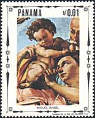
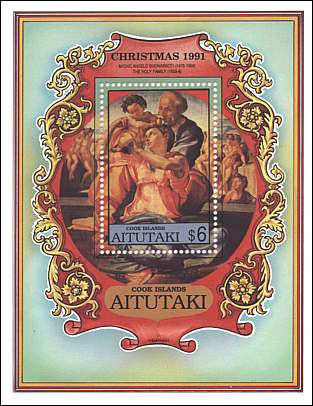
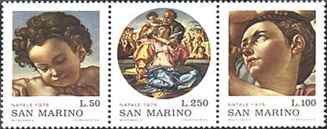
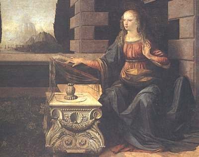
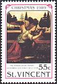
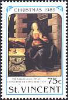

Offices Gallery, Michelangelo
← Recently Modernized Pages · Art Gallery · Home
Uffizi Gallery, Florence
Michelangelo and Da Vinci
Hall 25. Michelangelo Buonarroti, (1475-1564). The Holy Family, 1504. This work is one of the rare paintings on wood of Michelangelo. It is also named "Tondo Doni", after the name of the Doni family, who ordered it in 1504. In the plastic force of forms one can see the leaning of the master of the sculpture, an artist who maintained that the painting has to be adapted and to take distance from the style of Leonardo da Vinci. The figures are animated by a dynamic tension, that accentuates the dramatic and heroic conception of the subject. The group in the front, that symbolizes the new world of Christianity, is clearly detached from the classic, pagan world, shown in the background of the painting.
 |
 |
 |
Hall 15. Leonardo da Vinci, 1452-1519. L'Annuciation, about 1470. This is a youth work of the master. It was executed in the studio of Andrea del Verrochio, about 1470, and came from the monastery of Monteolliveto of Florence. There were long discussions concerning the author of this work, many considering it as being paint by Ghirlandaio. One of reasons if this opinion is the absence of the "sfumato", a characteristics of da Vinci's later works. But the mildness of the drawing and the attentive observation of details are arguments in the favor of the Leonardo's authorship.
|
 |
 |
|
 |
Links to pages on this site:
-
Sixtin Chapel, by Michelangelo Buonarroti
-
Mona Lisa, by Leonardo da Vinci